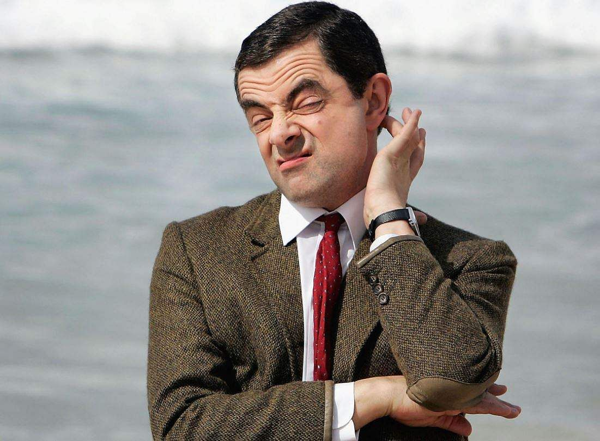
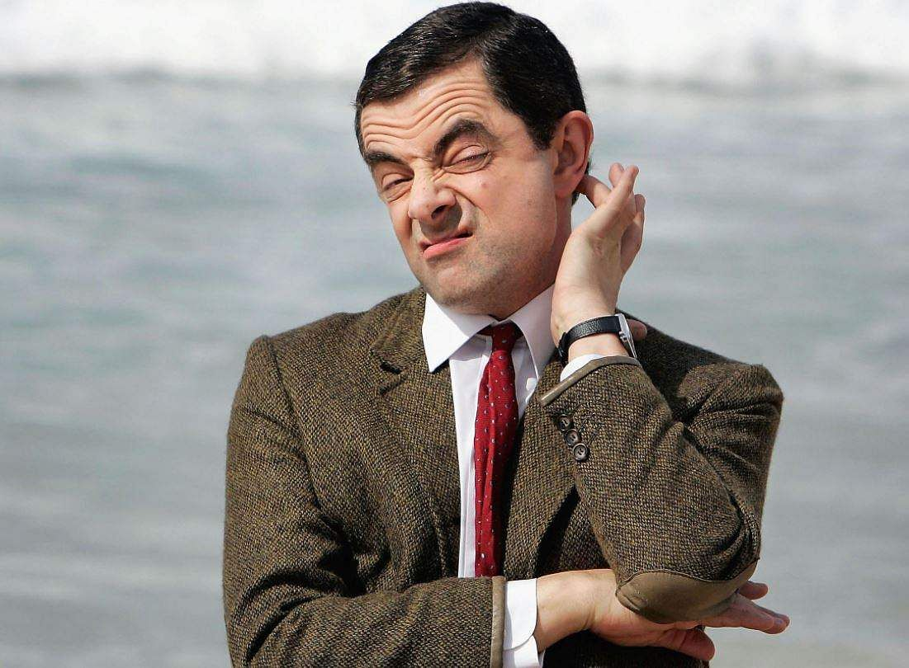

Mr. Bean is a British sitcom created by Rowan Atkinson and Richard Curtis,
produced by Tiger Aspect and starring Atkinson as the title character.
 

Mr. Bean has green eyes and a brown teddy bear bear!
The character of Mr. Bean was developed while Rowan Atkinson was studying for his master's degree in
electrical
engineering at The Queen's College,
Oxford.
A sketch featuring Bean was shown at the Edinburgh Fringe in the early 1980s.
A similar character called Robert Box, also played by Atkinson,
appeared in the one-off 1979 ITV sitcom Canned Laughter which also featured routines used in the motion
picture
in 1997.
| episode number | episode name |
|---|---|
| 1 | "Mr. Bean" |
| 2 | "The Return of Mr. Bean" |
| 3 | "The Curse of Mr. Bean" |
| 4 | "Mr. Bean Goes to Town" |
| 5 | "The Trouble with Mr. Bean" |
| 6 | "Mr. Bean Rides Again" |
| 7 | "Merry Christmas, Mr. Bean" |
| 8 | "Mr. Bean in Room 426" |
| 9 | "Do-It-Yourself Mr. Bean" |
| 10 | "Mind the Baby, Mr. Bean" |
- His bear
- His car
- To go to church
- To get into trouble
- The Blue Car
- Long queues
- To go to the dentist
- To spend money